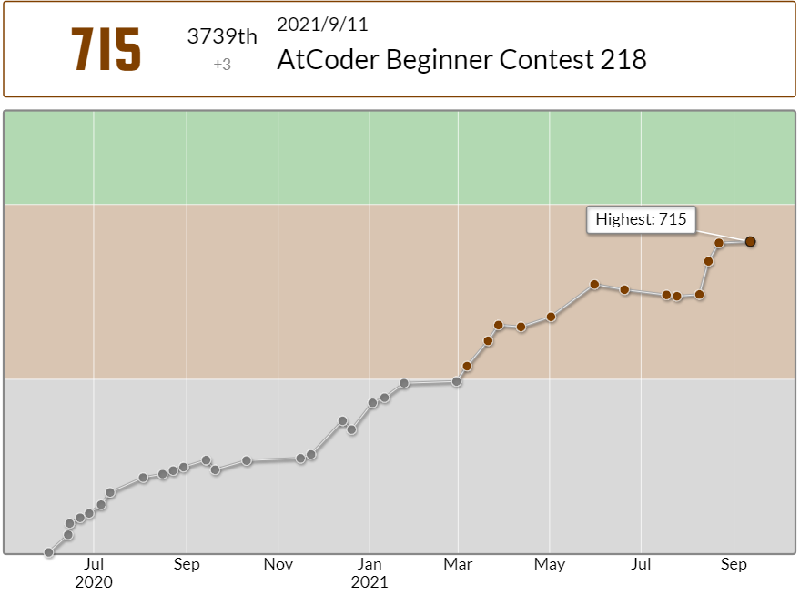
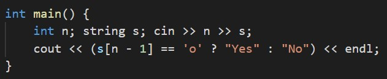
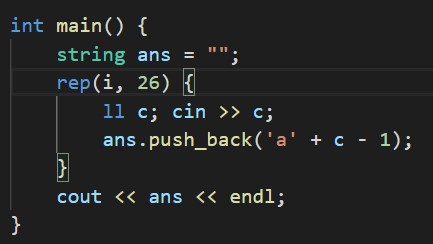
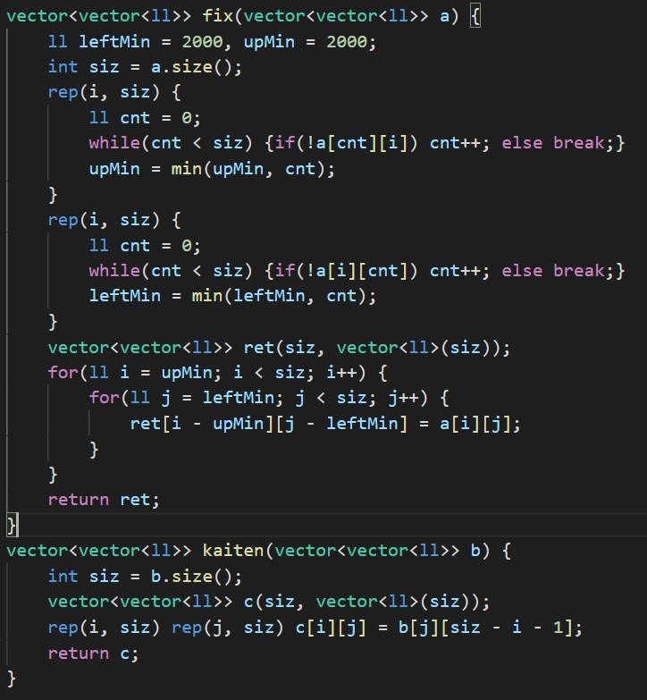
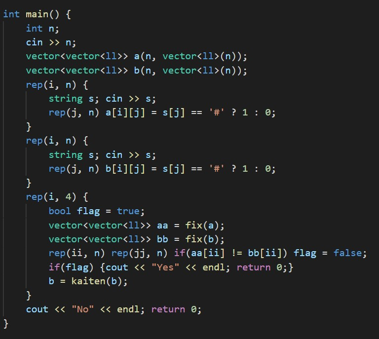
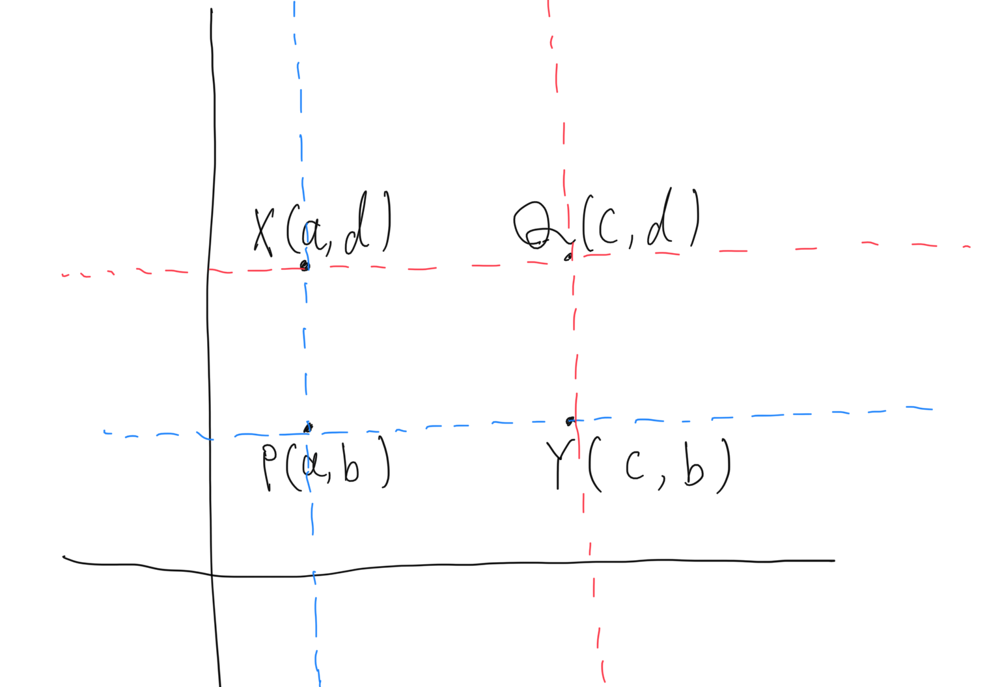
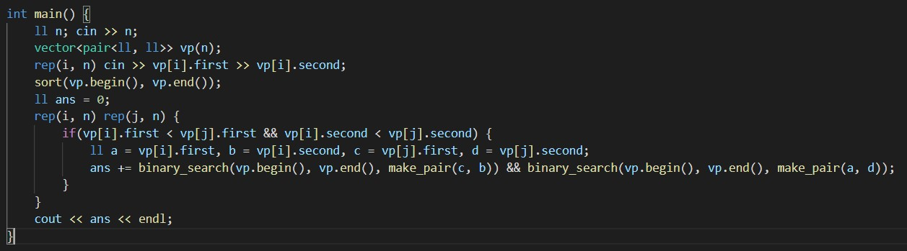

3週間ぶりに出ました。そろそろ緑が見えてきたのでウキウキしつつちょっと緊張してました。
今回は43分3完0ペナとかなり微妙な結果でした。
レートはギリギリ減少を免れました。今回はC問題がかなり難しめ(diffがC>E>Dだった)だったので命拾いしました。
A - Weather Forecast
対応する文字列がoかxかの条件分岐で解けます。
B - qwerty
i番目の文字は、'a' + P[i] - 1になるので、それを順次処理していきます。
C - Shapes
90°回転させた後にS,T共に左上に寄せるという操作をすれば良いことに気づくまでにかなり時間がかかってしまいました。 その実装にもかなり時間がかかってしまい、D問題にあまり時間を残すことができませんでした。
考え方は、
まず、回転パターンは4通りしかない
↓
平行移動のパターンはいくらでもあるが、#部分の形だけに注目するとS,T共に同じ所(左上)に寄せてあげればいい
↓
片方のグリッドを固定して考えてもう片方を90°回転→S,T共に左上寄せ という操作を4回やって全て一致するケースがあったらYes、なかったらNo
みたいな感じで思いつきました。
 (かなり汚い実装になってしまった...)
D - Rectangles
点を2個選べば長方形が求まる + 4≤N≤2000 で明らかにnC2の計算量が通るように調整されてる というところまでは分かったのですが、肝心の2点を選ぶ実装がうまくいかずに撃沈してしまいました。
まず、任意の2点P, Qについて、QがPの右上に位置している(すなわち上の図でa < cかつb < d)時のみ判定を行います。こうすることで、同じ長方形をダブってカウントする事を避けられます。
具体的な実装方法は、
全ての点をpairの配列でもってソートしておく→任意の2点P(a, b), Q(c, d)について(a > cまたはb > dのときはcontinue)、(a, d)と(c, b)の2点が存在しているかを二分探索によって求め、存在していたら答えを1増やす
という感じです。計算量はO(N^2logN)になります。
D問題にしてはかなり実装が軽めな気がします。
これ競プロあるあるだと思うんですけど、自分が解けなかった問題の実装が軽めだとちょっと悔しくなりません?
今回D問題ができなかったのは典型の知識というより自分の考察力のなさだと思うので、考察重めの過去問を解いて鍛えていきたいです。
次こそは緑 に...